<div class="article-body"><div class="article-intro" id="content"><h1>Python AI 绘画</h1><p>本文我们将为大家介绍如何基于一些开发 API 或开源的库来搭建一套自己的 AI 作图工具。</p><hr><h2>通过文生图 API</h2><p> 通过文生图 API，您可以基于文本描述创造出全新的原创图像。</p><p>阿里云百炼提供两大系列模型：</p> <ul><li><strong>通义千问（Qwen-Image）</strong>: 擅长渲染复杂的中英文文本，本章节以这个为例。</li><li><strong>通义万相（Wan系列）</strong>: 用于生成写实图像和摄影级视觉效果。</li></ul><p> 通过运行以下命令安装 DashScope Python SDK：</p><pre># 如果运行失败，您可以将pip替换成pip3再运行

pip install -U requests dashscope</pre><p> 我们需要开通阿里云百炼模型服务并获得 API-KEY。</p><p>我们可以先使用阿里云主账号访问百炼模型服务平台：<a href="https://bailian.console.aliyun.com/" target="_blank">https://bailian.console.aliyun.com/</a>，然后点击右上角登录，登录成功后点击右上角的齿轮⚙️图标，选择 API key，然后复制 API key，如果没有也可以创建 API key：</p><p>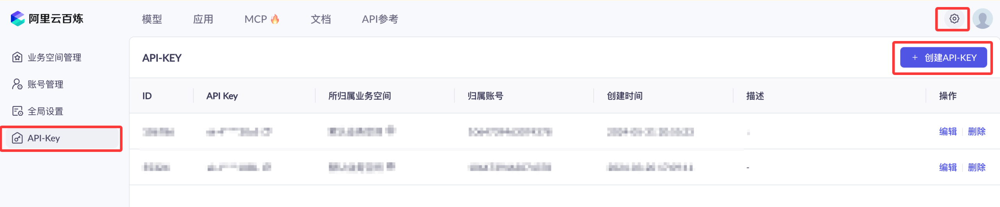</p><p>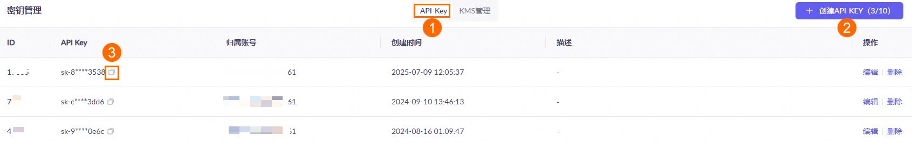</p><p> 开通阿里云百炼不会产生费用，仅模型调用（超出免费额度后）、模型部署、模型调优会产生相应计费。</p><p>现在要使用 API，都需要按 token 来计费，还好都不贵，我们可以先购买个最便宜的包：<a href="https://dashi.aliyun.com/activity/ydsbl?userCode=i5mn5r7m" target="_blank">阿里云百炼大模型服务平台</a>。</p><p><a href="https://dashi.aliyun.com/activity/ydsbl?userCode=i5mn5r7m" target="_blank">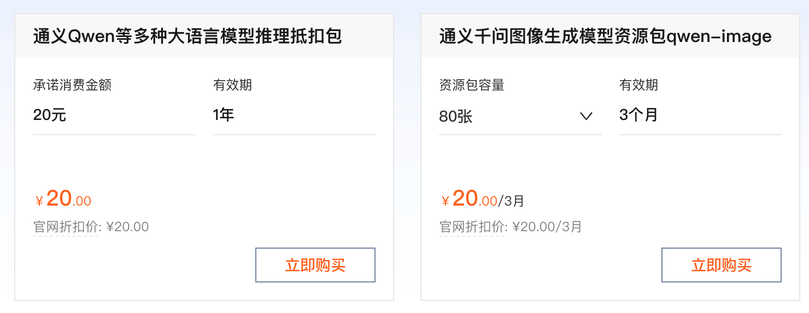</a></p><p> 接下来我们通过设置提示词来生成图片：</p><div class="example"><h2 class="example">实例</h2> <div class="example_code"><span style="color: Green;font-weight:bold;">from</span> http <span style="color: Green;font-weight:bold;">import</span> HTTPStatus<br><span style="color: Green;font-weight:bold;">from</span> <span style="color: #05a;">urllib</span>.<span style="color: #05a;">parse</span> <span style="color: Green;font-weight:bold;">import</span> <span style="color: #05a;">urlparse</span><span style="color: Gray;">,</span> unquote<br><span style="color: Green;font-weight:bold;">from</span> pathlib <span style="color: Green;font-weight:bold;">import</span> PurePosixPath<br><span style="color: Green;font-weight:bold;">import</span> requests<br><span style="color: Green;font-weight:bold;">from</span> dashscope <span style="color: Green;font-weight:bold;">import</span> ImageSynthesis<br><span style="color: Green;font-weight:bold;">import</span> <span style="color: #05a;">os</span><br><br> prompt <span style="color: Gray;">=</span> <span style="color: #a11;">"一副典雅庄重的对联悬挂于厅堂之中，房间是个安静古典的中式布置，桌子上放着一些青花瓷，对联上左书"义本生知人机同道善思新"，右书"通云赋智乾坤启数高志远"， 横批"智启通义"，字体飘逸，中间挂在一着一副中国风的画作，内容是岳阳楼。"</span><br><br><span style="color: #a50"># 请用百炼API Key</span><br> api_key <span style="color: Gray;">=</span> <span style="color: #a11;">"sk-xxx"</span><br><br><span style="color: Green;font-weight:bold;">print</span><span style="color: Olive;">(</span><span style="color: #a11;">'----同步调用，请等待任务执行----'</span><span style="color: Olive;">)</span><br> rsp <span style="color: Gray;">=</span> ImageSynthesis.<span style="color: #05a;">call</span><span style="color: Olive;">(</span>api_key<span style="color: Gray;">=</span>api_key<span style="color: Gray;">,</span><br>                           model<span style="color: Gray;">=</span><span style="color: #a11;">"qwen-image"</span><span style="color: Gray;">,</span><br>                           prompt<span style="color: Gray;">=</span>prompt<span style="color: Gray;">,</span><br>                           n<span style="color: Gray;">=</span><span style="color: Maroon;">1</span><span style="color: Gray;">,</span><br>                           size<span style="color: Gray;">=</span><span style="color: #a11;">'1328*1328'</span><span style="color: Gray;">,</span><br>                           prompt_extend<span style="color: Gray;">=</span><span style="color: Teal;">True</span><span style="color: Gray;">,</span><br>                           watermark<span style="color: Gray;">=</span><span style="color: Teal;">True</span><span style="color: Olive;">)</span><br><span style="color: Green;font-weight:bold;">print</span><span style="color: Olive;">(</span><span style="color: #a11;">'response: %s'</span> % rsp<span style="color: Olive;">)</span><br><span style="color: Green;font-weight:bold;">if</span> rsp.<span style="color: #05a;">status_code</span> <span style="color: Gray;">==</span> HTTPStatus.<span style="color: #05a;">OK</span>:<br>     <span style="color: #a50"># 在当前目录下保存图片</span><br>     <span style="color: Green;font-weight:bold;">for</span> result <span style="color: Green;font-weight:bold;">in</span> rsp.<span style="color: #05a;">output</span>.<span style="color: #05a;">results</span>:<br>         file_name <span style="color: Gray;">=</span> PurePosixPath<span style="color: Olive;">(</span>unquote<span style="color: Olive;">(</span><span style="color: #05a;">urlparse</span><span style="color: Olive;">(</span>result.<span style="color: #05a;">url</span><span style="color: Olive;">)</span>.<span style="color: #05a;">path</span><span style="color: Olive;">)</span><span style="color: Olive;">)</span>.<span style="color: #05a;">parts</span><span style="color: Olive;">[</span>-<span style="color: Maroon;">1</span><span style="color: Olive;">]</span><br>         <span style="color: Green;font-weight:bold;">with</span> <span style="color: Teal;">open</span><span style="color: Olive;">(</span><span style="color: #a11;">'./%s'</span> % file_name<span style="color: Gray;">,</span> <span style="color: #a11;">'wb+'</span><span style="color: Olive;">)</span> <span style="color: Green;font-weight:bold;">as</span> f:<br>             f.<span style="color: #05a;">write</span><span style="color: Olive;">(</span>requests.<span style="color: #05a;">get</span><span style="color: Olive;">(</span>result.<span style="color: #05a;">url</span><span style="color: Olive;">)</span>.<span style="color: #05a;">content</span><span style="color: Olive;">)</span><br><span style="color: Green;font-weight:bold;">else</span>:<br>     <span style="color: Green;font-weight:bold;">print</span><span style="color: Olive;">(</span><span style="color: #a11;">'同步调用失败, status_code: %s, code: %s, message: %s'</span> %<br>           <span style="color: Olive;">(</span>rsp.<span style="color: #05a;">status_code</span><span style="color: Gray;">,</span> rsp.<span style="color: #05a;">code</span><span style="color: Gray;">,</span> rsp.<span style="color: #05a;">message</span><span style="color: Olive;">)</span><span style="color: Olive;">)</span><br></div></div><p> 输出结果类似如下，会看到有个 url 的参数，我们访问它就可以下载通过提示词描述的图片了：</p><pre>

----同步调用，请等待任务执行----

response: {"status_code": 200, "request_id": "1968746e-f434-4f77-9f8c-9b1adb80e8d7", "code": null, "message": "", "output": {"task_id": "d85c65d9-c4ff-4d66-a895-7c7746620b0c", "task_status": "SUCCEEDED", "results": [{"url": "https://dashscope-result-sh.oss-cn-shanghai.aliyuncs.com/7d/05/20250916/8d68e658/d85c65d9-c4ff-4d66-a895-7c7746620b0c-1.png?xxxxxxxxx", 

...

</pre><p> 以上实例生成的图片如下：</p><p></p><blockquote><p> 更多内容可以参考官方文档：<a href="https://help.aliyun.com/zh/model-studio/text-to-image" target="_blank">https://help.aliyun.com/zh/model-studio/text-to-image</a></p></blockquote><hr><h2>Stable Diffusion</h2><p>需要使用的开源库为 Stable Diffusion web UI，它是基于 Gradio 库的 Stable Diffusion 浏览器界面</p><p>Stable Diffusion web UI GitHub 地址：<a href="https://github.com/AUTOMATIC1111/stable-diffusion-webui" rel="noopener" target="_blank">https://github.com/AUTOMATIC1111/stable-diffusion-webui</a></p><p class="important">运行 Stable Diffusion 需要硬件要求比较高，运行时会消耗较大的资源，特别是显卡。</p><h3>Windows 环境安装</h3><p> 本地环境要求安装 Python 3.10.6 或以上版本，并把它加入到本机的环境变量中。</p><p> 下载 Stable Diffusion web UI GitHub 源码 <a href="https://github.com/AUTOMATIC1111/stable-diffusion-webui" rel="noopener" target="_blank">https://github.com/AUTOMATIC1111/stable-diffusion-webui</a>。</p><pre>git clone https://github.com/AUTOMATIC1111/stable-diffusion-webui.git</pre><p>如果没有安装 Git ，可以在右上角下载 zip 压缩包。</p><p>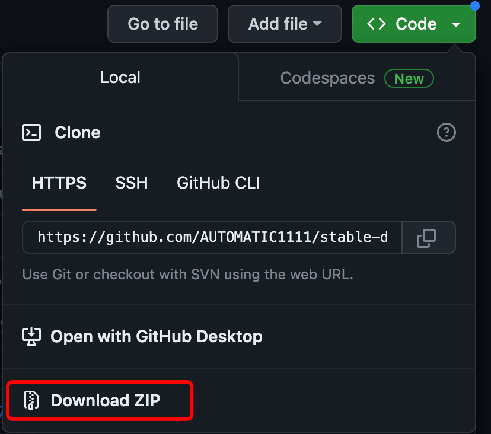</p><p>解压 stable-diffusion-webui，并进入 stable-diffusion-webui 目录。</p><p>接下来我们需要下载模型，下载地址：<a href="https://huggingface.co/CompVis/stable-diffusion-v-1-4-original" rel="noopener" target="_blank">https://huggingface.co/CompVis/stable-diffusion-v-1-4-original</a></p><p>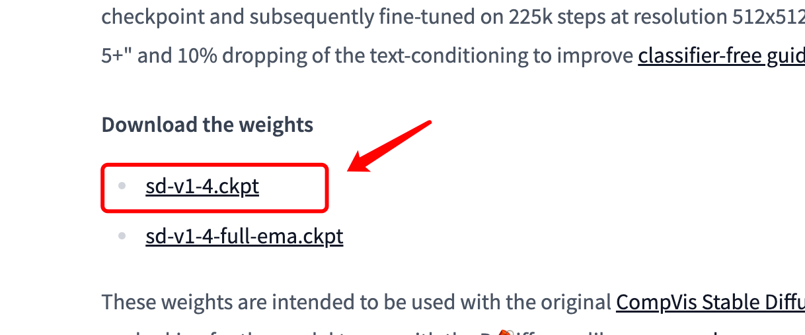</p><p>将下载的模型移动到 <span class="marked">stable-diffusion-webui/models/Stable-diffusion</span> 目录下。</p><p>进入 stable-diffusion-webui 目录：</p><p> Windows 使用非管理员运行: </p><pre>webui-user.bat</pre><p>Linux 和 Mac OS 环境执行以下命令：</p><pre>./webui.sh</pre><p> 接下来程序就会自动安装并启动，启动成功会看到一个可访问的 URL 地址 <span class="marked">http://127.0.0.1:7860</span>：</p><p>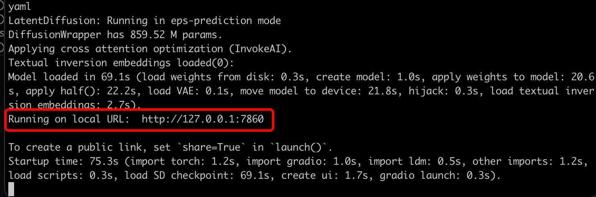</p><p>访问 <span class="marked">http://127.0.0.1:7860</span>，界面如下：</p><p>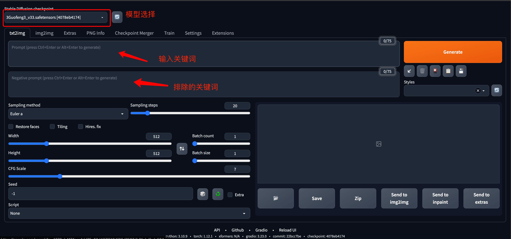</p><blockquote><strong>注意:</strong> 如果安装出现卡住不动，很可能是下载 Github 源码出现问题了，可以使用 Github 的一些镜像来解决，目前还没非常稳定的镜像，建议 Google 搜索下。 我这边在 2023 年 4 月 6 号使用以下镜像地址 <span class="marked">https://hub.fgit.ml</span>，打开 stable-diffusion-webui 目录的 launch.py 文件，替换以下部分代码的 Github 地址（代码大概在 230～240 行之间）： <p>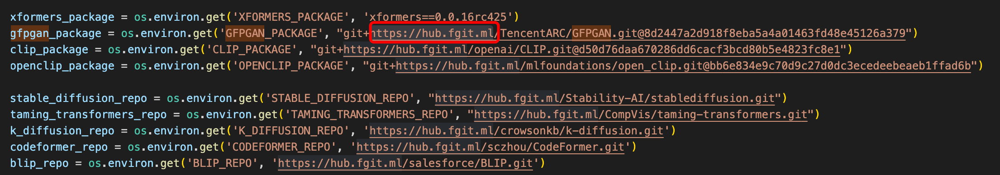</p></blockquote><h3>Civitai 介绍</h3><p>Civitai 有许多定制好的模型，而且可以免费下载，我们使用<strong>国风3</strong>模型来测试，下载地址：<a href="https://civitai.com/models/10415/3-guofeng3?modelVersionId=36644" rel="noopener" target="_blank">https://civitai.com/models/10415/3-guofeng3?modelVersionId=36644</a></p><p>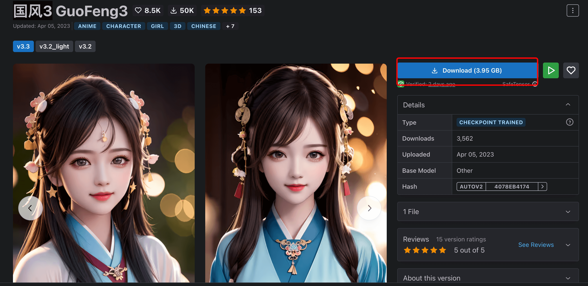</p><p> 下载完后，我们将模型移动到 <span class="marked">stable-diffusion-webui/models/Stable-diffusion</span> 目录下，重新启动 stable-diffusion-webui ：</p><pre>./webui.sh</pre><p> 这样我们就可以在模型列表中选择<strong>国风3</strong>模型了：</p><p>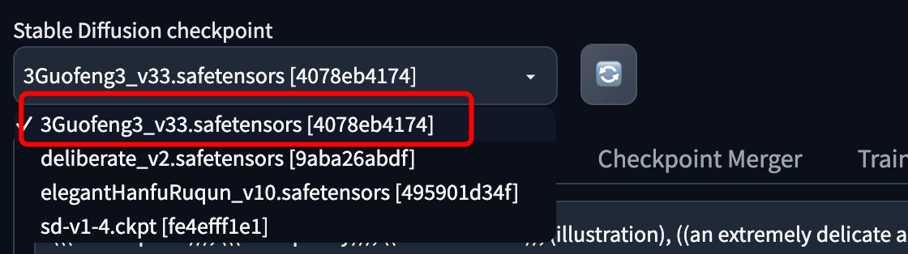</p><p>选择后，我们可以到模型介绍页面去拷贝一些提示词和测试参数：</p><p></p><p>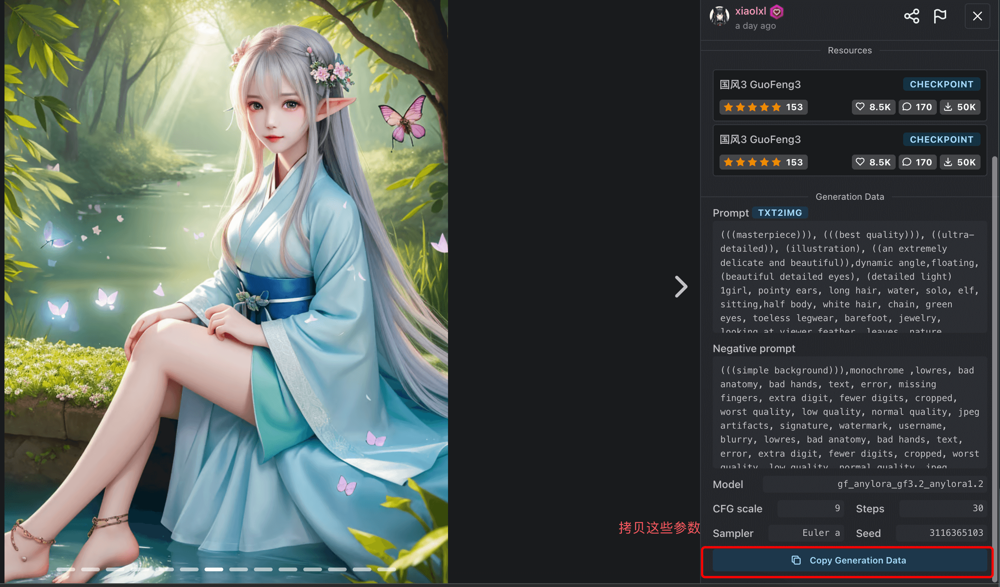</p><p></p><p>​为了快速生成，我高度跟宽度都减半了，之后点生成按钮即可：</p><p>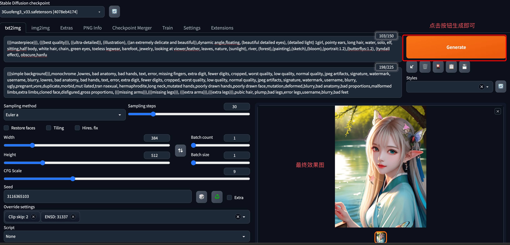</p><p>生成完整过程，可以关注我们微信视频号查看：</p><p></p></div></div>